Two pieces for MICA’s graduate admissions. The mailer was printed in 2020 and went out for two admissions cycles. Slash, a full catalog, followed in 2022 and is still in use.
MICA’s in person graduate programs have little in common beyond the campus they share. They run as boutique studio environments based on the expertise and interests of their directors. How do you show that without flattening the differences, or printing a thick, generic catalog?
The mailer
The first piece went out during the pandemic: a die-cut zine that unfolds into a poster. We worked with Schmitz Press to find a paper that would take the folds well. That paper’s press sheet set the size of the zine. One cut down the middle made two posters, each die-cut and folded for easy mailing.
Both sides print from one set of CMYK plates. Print one side, flip and rotate the stack, run it through again. Printing efficiently is part of designing for the welfare of all life, as much as the content and the paper are. Every image and typeface is public domain or open source, as a receiver of the mailer, you could see where to get the design resources to use yourself. As a believer in the idea that higher ed is for the creation and sharing of information, embedding these open source values was important to me, and to the MICA grad admissions team.
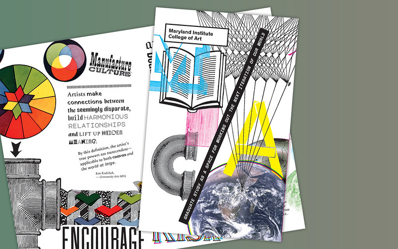
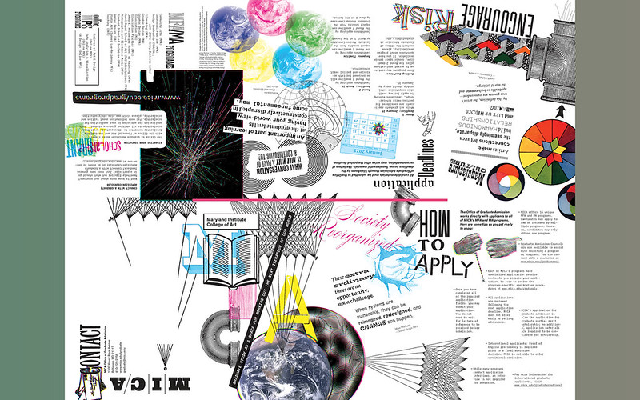
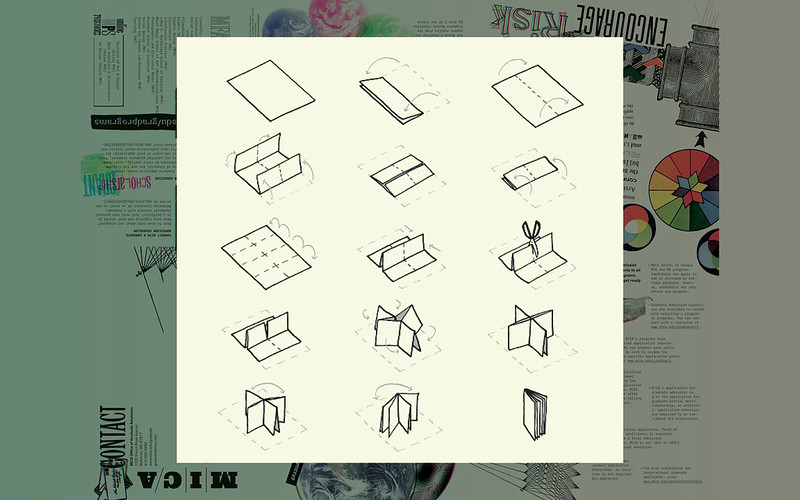
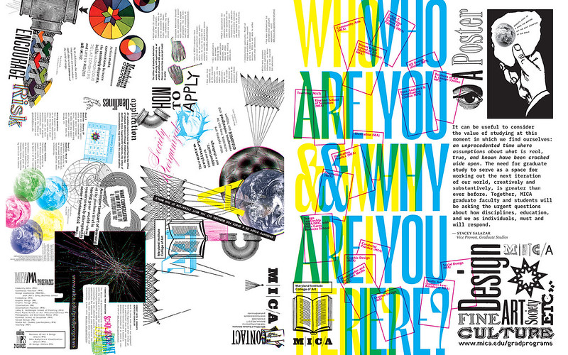
Slash
The old Graduate Admissions catalog ran a few hundred pages: photography, long program descriptions, and a separate set of application instructions for every program, though most of that information was just repeated from program to program. Slash instead keeps the mailer’s minimal ideals. Whatever applies to everyone needs no repeating. The general information goes in the front and back of the book, in black only, the same for every program. This creates a real visual separation in the content. The front and back matter borrow from a deliberate hodgepodge of art history and Baltimore sources, so MICA as a whole reads as many things at once.
Each program gets one two-page spread in color, a flag for what the program is and what it believes. The references come from the program itself, or from a more abstract formal idea that fits the program’s point of view. Flip through and the programs hopefully look as different as they are.
Slash is a much smaller and lighter form than the old grad admissions books. It uses less paper, less ink, and less fuel to ship, even though the old ones held more information. The bet was that one spread built for meaning can do as much as pages of student work and seemingly unending text on a grid.
Slash was also built to change one spread at a time, because some programs change every year and others may stay conceptually the same for a decade!
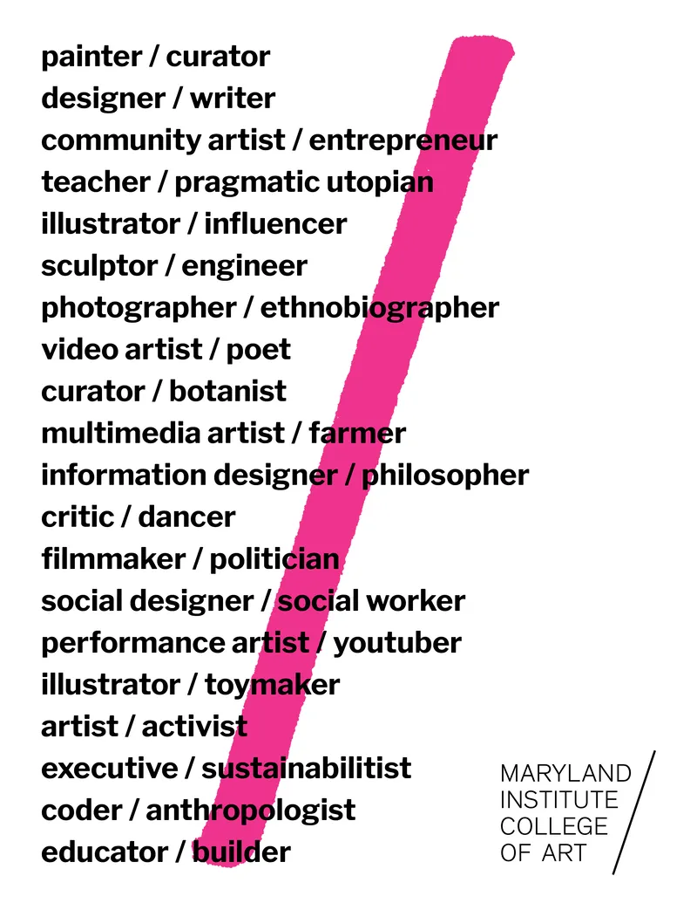
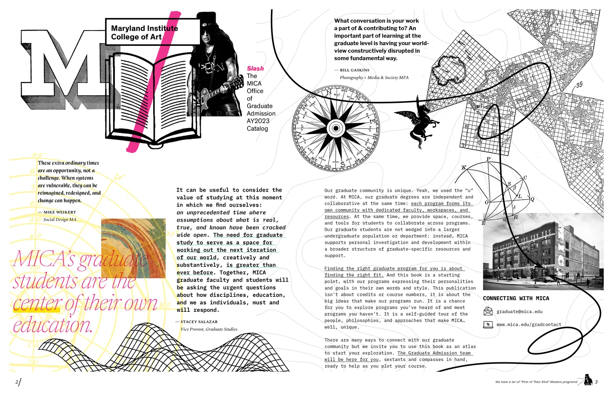
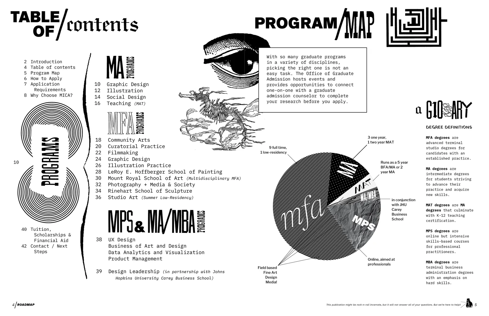
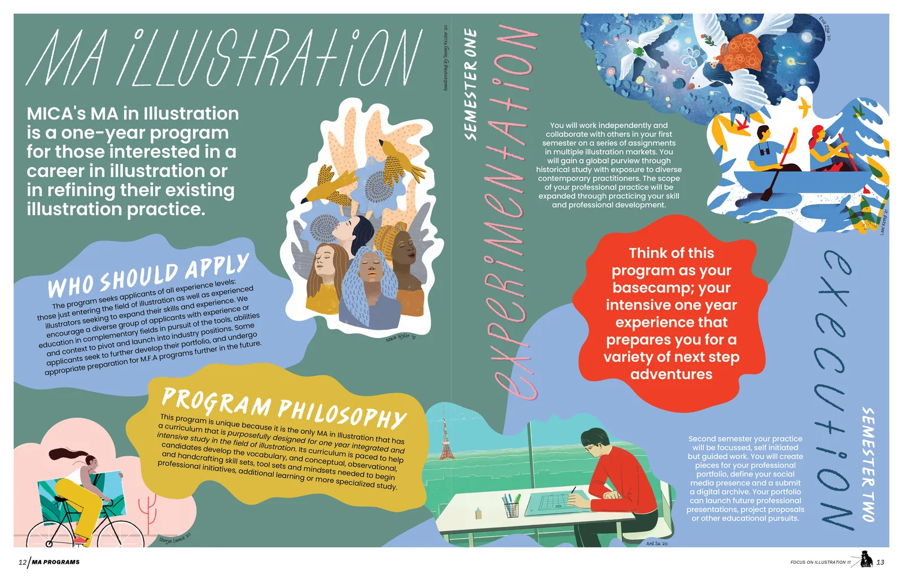
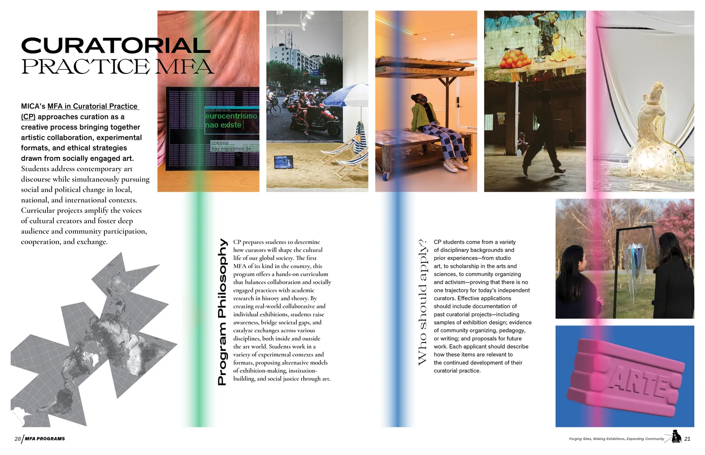
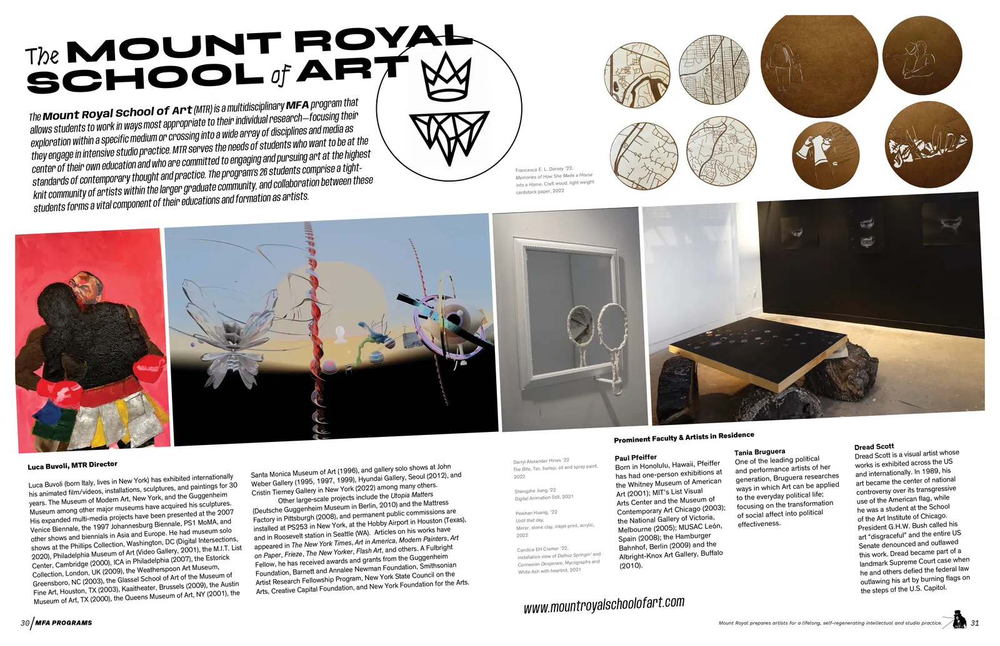
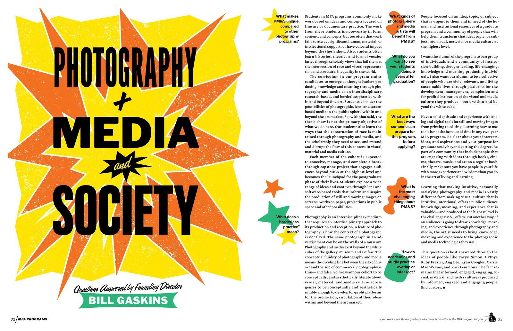
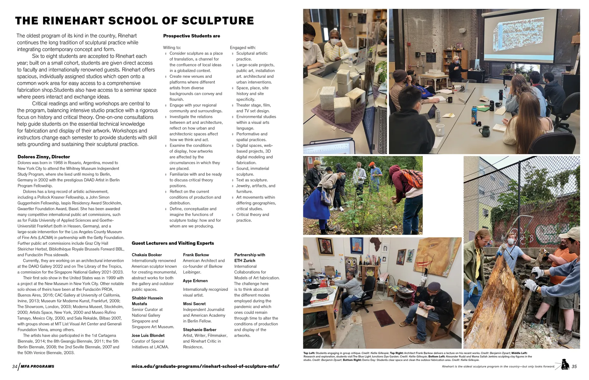
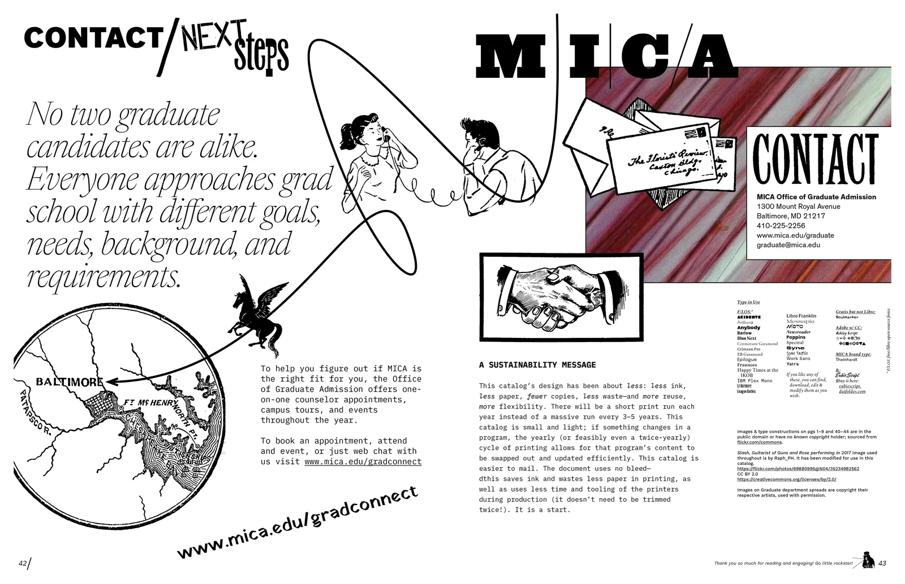